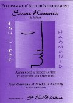
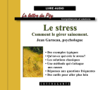
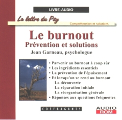

|
Le site officiel de Ressources en Développement Les psychologues humanistes |
Vous trouverez ici les écrits de psychologues spécialisés en Auto-développement ainsi que divers outils pour vous aider dans la recherche de solutions aux difficultés de votre vie.
Le site de Redpsy - Autodéveloppement est remis à jour.
Le site est actuellement en test. Il est possible que certains liens aient échappé à notre attention et ne fonctionnent pas normalement. Excusez-nous pour les inconvients engendrés Vous pouvez nous en avertir l'adresse suivante : alertes@redpsy.comUn nouveau CD-audio comportant de larges extraits du livre ''Le défi des relations'' est disponible sur notre site.

Commander
|
|
|
Vous avez besoin de psychothérapie? |
La psychothérapie Découvrez les différentes formes de psychothérapie que nous offrons: individuelle et de couple. Voyez comment choisir celle qui convient à vos besoins! |
Vous désirez développer votre habileté à ressentir? |
Le programme d'auto-développement: Savoir Ressentir (2e édition) Un fascicule par jour (ou au deux jours selon ce qui vous convient), 30 à 50 minutes par séance, au moment, à l'endroit et au rythme qui vous conviennent. S'adapte à vos habiletés, vos objectifs, vos préférences et même vos réticences. Par les psychologues Michelle Larivey et Jean Garneau. Également disponible en cours virtuels : Savoir Ressentir Online! |
Vous voulez un rendez-vous ? |
Pour rencontrer un de nos psychologues Voici comment procéder pour obtenir un rendez-vous avec un psychologue de notre équipe. |
|
|
|
Un magazine électronique en français sur la psychologie? |
La lettre du Psy Magazine électronique gratuit où vous trouverez des articles, des réponses à vos questions, la définition d'expériences émotives, des outils et des trucs utiles pour vous aider dans votre développement personnel. L'édition de la lettre du psy est interrompue depuis quelques années. Vous pouvez encore consulter nos archives sur le site. Nous espérons reprendre un jour cette formule sous une autre forme. Vous pouvez continuer à nous envoyer vos coordonnées qui nous permettrons de vous envoyer des informations concernant une parution éventuelle. |
Des articles pour vous aider dans votre développement personnel? |
Infopsy Articles intéressants et utiles concernant diverses réalités psychologiques. Pour chacun, vous pouvez consulter une liste de questions-réponses et même poser vos propres questions. Voyez aussi les livres de la collection La lettre du Psy. |
Des informations pour mieux comprendre vos expériences émotives? |
Le guide des émotions Explications précises concernant la signification et l'utilité de différentes expériences émotives (culpabilité, jalousie, désir, gêne, etc.). De plus, distinguez les quatre types d'expériences émotives. Voyez aussi le livre La puissance des émotions, par Michelle Larivey. |
Des trucs et des outils pour vous aider? |
Le coffre d'outils Variété d'outils pour vous aider dans votre développement personnel. Des outils pour mieux vous connaître, améliorer votre vie de couple, apprendre des techniques de communication, etc. |
Des poèmes qui traitent de réalités psychologiques? |
Images intérieures C'est dans un langage imagé que la psychologue Michelle Larivey rend avec justesse les nuances, les subtilités, les éclats et l'intensité des drames humains que son travail l'amène à partager. Voyez aussi Ravage et... délivrance, un recueil de poèmes humanistes par Michelle Larivey. |
|
|
|
|
Nos services aux professionnels |
|
Vous travaillez auprès de victimes de choc post-traumatique? |
Le stress secondaire Vous y trouverez des ressources pour évaluer si vous êtes potentiellement à risque d'éprouver des problèmes reliés à votre pratique. Vous trouverez aussi de l'aide si vous en avez besoin. |
Vous cherchez des outils d'intervention? |
Utilisation professionnelle du programme Savoir Ressentir Voici un outil qui contribue à développer chez le client des habiletés qui sont essentielles au succès de la démarche thérapeutique: la capacité d'éprouver et d'identifier clairement ses sentiments ainsi que ses sensations et émotions. |
|
|
|
|
Nos livres Nos programmes Nos CD (livres audio) |
|
| Nos livres | |

Aussi disponible sur CD audio |
Le défi des relations -- Comment résoudre nos transferts affectifs Un ouvrage précieux pour tous ceux qui veulent mieux comprendre leurs relations avec les personnes les plus importantes de leur vie et cesser de se retrouver dans les mêmes impasses avec chaque nouveau partenaire. Les scénarios répétitifs et les réactions disproportionnées trouvent ici un sens et une utilité cruciale pour le développement de notre identité. Le défi des relations propose non seulement une compréhension des aspects transférentiels qui sont au coeur de ces impasses, mais également la possibilité d'arriver à une véritable solution à travers l'expression. Par Michelle Larivey, psychologue. |
 |
L'enfer
de la fuite -- Comment en revenir plus fort
Cet ouvrage s'adresse à tous ceux qui souffrent des maux découlant de la fuite de soi: anxiété et angoisse, panique, phobie, migraines, insomnie, stress, burnout, alcoolisme, et autres assuétudes. On y trouve des explications claires sans jargon technique et des solutions qui ont fait leurs preuves. La compréhension des mécanismes en jeu permet d'agir soi-même sur sa vie et d'y apporter des changements constructifs. Par Jean Garneau et Michelle Larivey, avec la collaboration de Gaëtane LaPlante, Karène Larocque et Bruno Roberge. |

Aussi disponible sur CD audio |
La
puissance des émotions -- Comment distinguer les vraies des fausses
Des clarifications essentielles sur le rôle des émotions, sur la nature de chacune d'entre elles et sur la manière de s'en servir. Chaque expérience émotionnelle est développée à partir d'anecdotes tirées du quotidien. Sans jargon scientifique ou vocabulaire technique, cet ouvrage servira de guide à tous ceux qui s'intéressent à leur vie émotionnelle et qui désirent mieux la comprendre. Par la psychologue Michelle Larivey. |
 |
La vie émotive
vous intéresse ?
Les émotions source de vie Cet ouvrage permet de comprendre plusieurs phénomènes de la vie psychique. Écrit par des spécialistes, dans un langage précis et accessible, il fournit des explications fondamentales sur le fonctionnement des émotions. Préface de Yves St-Arnaud : "... des points de repère précis pour laisser toute la place à ses émotions sans être envahi par elles. ..." Par les psychologues Jean Garneau et Michelle Larivey; avec la collaboration de Gaëtane La Plante. |
 |
Vous aimez la
poésie ?
Ravage et... Délivrance (poèmes humanistes) Les réalités psychologiques ont une richesse et une complexité qu'il est difficile de traduire en mots. Michelle Larivey utilise souvent le langage imagé de la poésie pour rendre avec justesse les nuances, les subtilités, les éclats et l'intensité des drames humains que le travail quotidien l'amène à partager. Préface de Jacques Salomé. Par la psychologue Michelle Larivey. |
 |
Vous désirez en
savoir plus sur l'Auto-développement?
L'auto-développement: psychothérapie dans la vie quotidienne épuisé Synthèse de l'approche Auto-développement: une conception du développement personnel, une explication du processus de croissance, une possibilité d'utiliser ses relations comme occasions d'épanouissement et des réflexions sur certaines questions fondamentales de l'existence. Par les psychologues Michelle Larivey et Jean Garneau. |
|
Nos programmes d'auto-développement |
|
|
|
Vous désirez
développer votre habileté à ressentir?
Le programme Savoir Ressentir (2e édition) Un fascicule par jour (ou au deux jours selon ce qui vous convient), 30 à 50 minutes par séance, au moment, à l'endroit et au rythme qui vous conviennent. S'adapte à vos habiletés, vos objectifs, vos préférences et même vos réticences. Par les psychologues Michelle Larivey et Jean Garneau. Également disponible en cours virtuels : Savoir Ressentir Online |
|
 |
Vous voulez développer votre habileté à ressentir ? Savoir Ressentir Online : trois cours virtuels pour apprendre à ressentir! Savoir Ressentir est un programme qui vous apprendra à utiliser vos sentiments et vos émotions de façon productive. Une série de trois cours totalisant 24 leçons que vous suivrez au moment et au rythme qui vous conviennent. Les difficultés que vous rencontrez et les résultats que vous obtenez aux activités déterminent la suite de votre démarche. Ce cheminement personnalisé permet de vous offrir un cours qui s'adapte à vos habiletés, vos objectifs, vos préférences et même vos réticences. Par les psychologues Jean Garneau et Michelle Larivey. |
|
Nos livres audio sur CD |
|
|
 |
CD AUDIO-ROM par
Le stress : comment le gérer sainement Dans la collection La lettre du Psy, ce livre audio contient l'article de Jean Garneau ainsi que les réponses aux questions fréquentes qui s'y rattachent. Il fournit aussi divers outils et textes complémentaires permettant de s'évaluer soi-même, d'approfondir la question et de maîtriser les habiletés nécessaires pour mieux gérer le stress qui fait partie de notre existence. Une vision différente qui redonne sa place au plaisir intense. Narration par Jean Garneau et Sophie Stanké. |
 |
CD AUDIO-ROM par
La jalousie amoureuse : comment la rendre fertile Dans la collection La lettre du Psy, ce livre audio contient l'article de Michelle Larivey ainsi que les réponses aux questions fréquentes qui s'y rattachent. Il fournit aussi divers outils et textes complémentaires permettant de s'évaluer soi-même, d'approfondir la question et de maîtriser les habiletés requises pour utiliser sa jalousie ou celle d'un proche comme tremplin vers un meilleur épanouissement de soi et de la relation. Un guide pratique illustré de nombreux exemples. Narration par Michelle Larivey et Alexandre Stanké. |
 |
CD AUDIO-ROM
par
Refuser d'être victime : comment échapper au harcèlement Dans la collection La lettre du Psy, ce livre audio contient l'article de Michelle Larivey ainsi que les réponses aux questions fréquentes qui s'y rattachent. Il fournit aussi divers outils et textes complémentaires permettant de s'évaluer soi-même, d'approfondir la question et de maîtriser les habiletés requises pour échapper au harcèlement. Un guide pratique illustré de nombreux exemples. Narration par Michelle Larivey et Alexandre Stanké. |
|
 |
CD AUDIO-ROM
par
L'épuisement professionnel : prévention et solutions Dans la collection La lettre du Psy, ce livre audio contient l'article de Jean Garneau sur l'épuisement professionnel ainsi que les réponses aux questions fréquentes qui s'y rattachent. Il propose aussi divers outils et textes complémentaires permettant de s'évaluer soi-même, d'approfondir la question et de prévenir le congé forcé. À ceux qui sont déjà atteints et à leurs proches, il fournit un guide pour comprendre ce qui se passe et y apporter des solutions durables. Narration par Jean Garneau et Sophie Stanké. |
|
|
CD AUDIO-ROM
par
La confiance en soi : comment la bâtir au quotidien Dans la collection La lettre du Psy, ce livre audio contient l'article de Jean Garneau ainsi que les réponses aux questions fréquentes qui s'y rattachent. Il fournit aussi divers outils et textes complémentaires permettant de s'évaluer soi-même, d'approfondir la question et de maîtriser les habiletés requises pour devenir plus confiant. Un guide pratique et concret pour bâtir sa confiance. Narration par Jean GarneauLarivey et Sophie Stanké. |
|
|
CD AUDIO-ROM
par
Angoisse et anxiété : Les vigiles de l'équilibre mental Premier titre de la collection La lettre du Psy, ce livre audio contient l'article de Michelle Larivey sur l'angoisse ainsi que les réponses aux questions fréquentes qui s'y rattachent. Il fournit également divers outils et textes complémentaires permettant d'approfondir la question et de maîtriser les habiletés requises. Narration par Martine Mignot et Alexandre Stanké. |